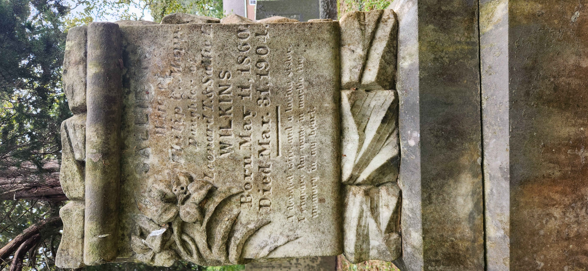

A devoted wife, and a loving sister. I engrave thy name in marble thy memory in my heart

Sallie T. MappMar. 11, 1860Mar. 31, 1904
Wife of Philip C. Mapp. Daughter of Leonard T. & Sallie E. Wilkins.